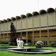
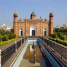
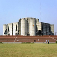

| NAME | PICTURE | Details |
|---|---|---|
| Majar of Banobandhu Sheikh Mujibur Rahman |  |
Majar of Banobandhu Sheikh Mujibur Rahman Tungipara is the birthplace of national leader Sheikh Mujibur Rahman. He was killed by the traitors in the year 1975, 15th August. He along with all of his family members except two daughters Sheikh Rehana and Sheikh Hasina were killed at a time. Later his dead body was brought to his birthplace Tungupara for commemoration.Ever year we remember the contributions of Bangabandhu in 15th August. It is a very historic and important place for the Bangladeshi people. |
| Ahsan Monjil | Ahsan Monjil Palace in Dhaka, Bangladesh Ahsan Manzil was the official residential palace and seat of the Dhaka Nawab Family. This magnificent building is situated at Kumartoli along the banks of the Buriganga River in Dhaka, Bangladesh. | |
| National Mujium |  | National Mujium Bangladesh National Museum Museum in Dhaka, Bangladesh The Bangladesh National Museum, originally established on 20 March 1913, albeit under another name, and formally inaugurated on 7 August 1913, was accorded the status of the national museum of Bangladesh on 17 November. |
| Lalbagh Fort |  | Lalbagh Fort Lalbagh Fort Fortress Lalbagh Fort is an incomplete 17th century Mughal fort complex that stands proudly before the Buriganga River in the southwestern part of Dhaka, Bangladesh. Address: Lalbagh, Dhaka, Bangladesh Burials: Pari Bibi, Muhammad Habibur Rahman. |
| Jatio sangsad Bhaban |  | Jatio Sangsad Bhaban Jatiyo Sangsad Bhaban Building in Dhaka, Bangladesh Jatiyo Sangsad Bhaban or National Parliament House, is the house of the Parliament of Bangladesh, located at Sher-e-Bangla Nagar in the Bangladeshi capital of Dhaka. |
| Dhanmondi Lake |  |
Dhanmondi Lake Dhanmondi Lake Lake in Dhaka, Bangladesh Dhanmondi Lake is a lake located in the Dhanmondi residential area in Dhaka, Bangladesh. The lake was originally a dead channel of the Karwan Bazar River, and was connected to the Turag River. |